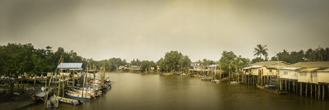

Pontian District located at Southwest of Johor. The resident of pontian mainly engaged in fisheries and farming. And the name of "Pontian" was translated from Malay word "Perhentian", the meaning is "Point of Parking". The named origin is because of in 1960s, the sailors, merchant which travelling between Singapore, Malacca or Indonesia are like to park their vessel in Pontian quay to replenish resources and also for shelter from the rough waters the Straits of Malacca. 